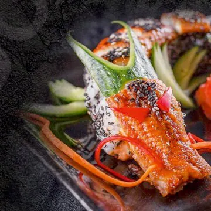
Signature Roll
Dragon Roll
14,90 €
Herzlich willkommen
Ein kleines Stück Japan in der Steingasse – frisch gerollt, mit Liebe angerichtet.
Japanische Küche · Schmalkalden
Sushi-Kunst und asiatische Küche im Herzen von Schmalkalden – handgemacht, Rolle für Rolle.
Öffnungszeiten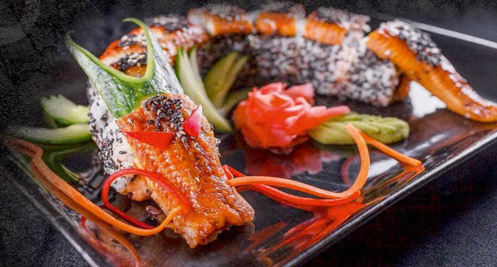
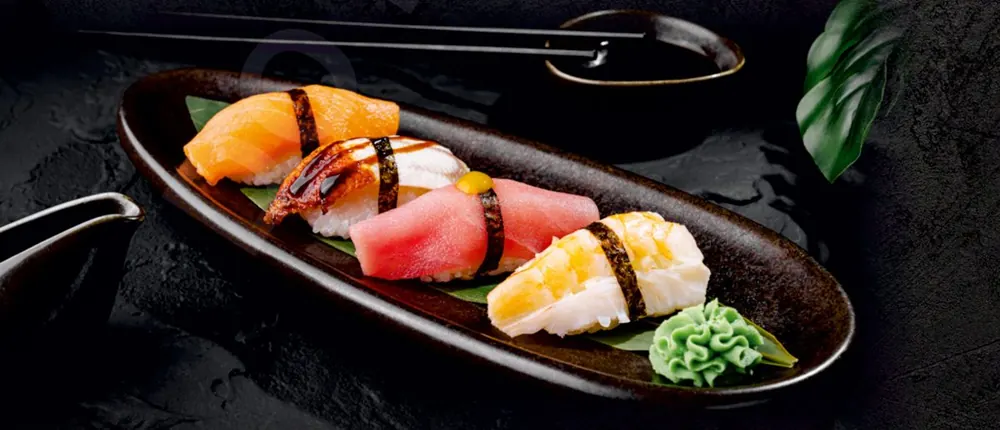
Willkommen
Im Do Sushi Haus treffen japanische Handwerkskunst und herzliche Gastfreundschaft aufeinander. Jede Rolle wird frisch für Sie zubereitet – mit ausgewähltem Fisch, knackigem Gemüse und hausgemachten Saucen.
Ob Mittagspause, Abend zu zweit oder Sushi-Platte für die ganze Familie: Nehmen Sie Platz, wir kümmern uns um den Rest.
Ein Stück Japan mitten in Thüringen: frischer Fisch, warmer Reis und ruhige Hände – jeden Tag, Rolle für Rolle.
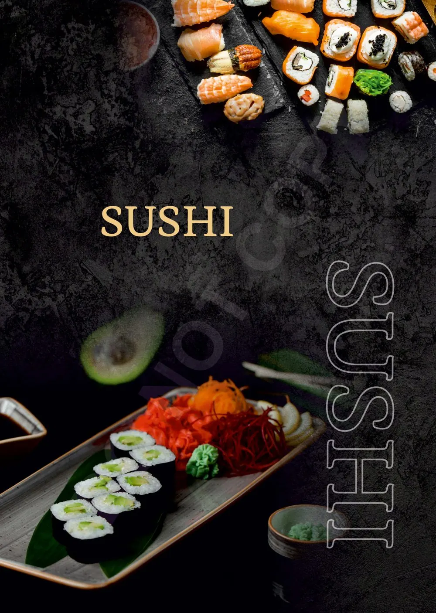
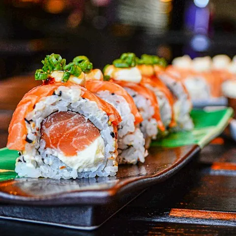
Die Sushi-Bar
Schottischer Lachs, Thunfisch, flambierter Aal: Geschnitten und gerollt wird erst, wenn Ihre Bestellung kommt. Unsere Signature Rolls – vom Crispy Tiger bis zum Trüffel Sake – sind kleine Kompositionen mit hausgemachten Saucen.
Und wer sich nicht entscheiden mag, nennt einfach einen Preis: Beim Sushi Master’s Choice stellen wir eine Auswahl ganz nach Gefühl zusammen.
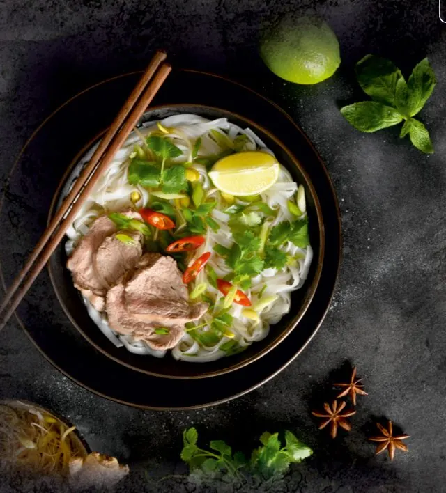
Asiatische Küche
Neben Sushi stehen bei uns auch asiatische Gerichte auf der Karte: Pho mit Zimt, Sternanis und Kardamom, Udon-Nudeln, Ente, Tofu und Curry mit Wok-Gemüse und Jasminreis.
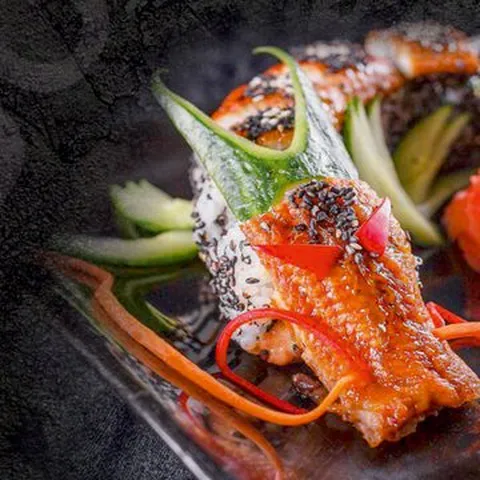
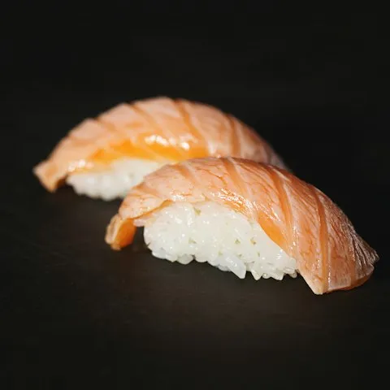
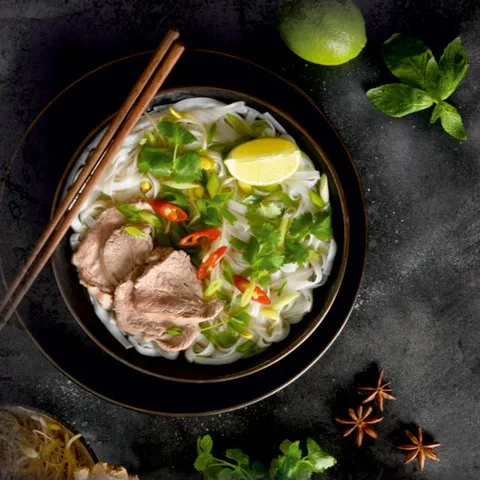
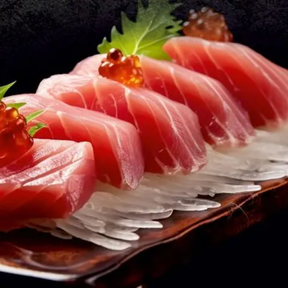
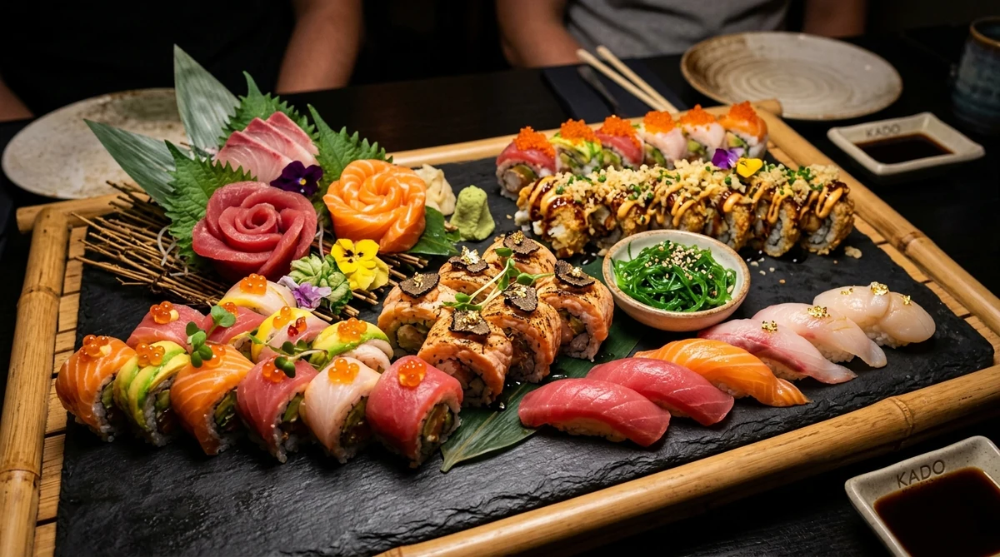
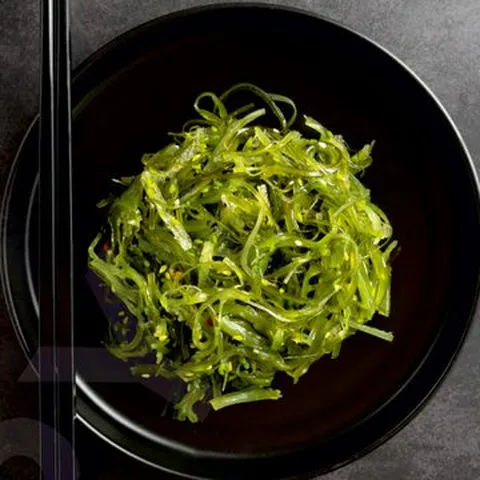
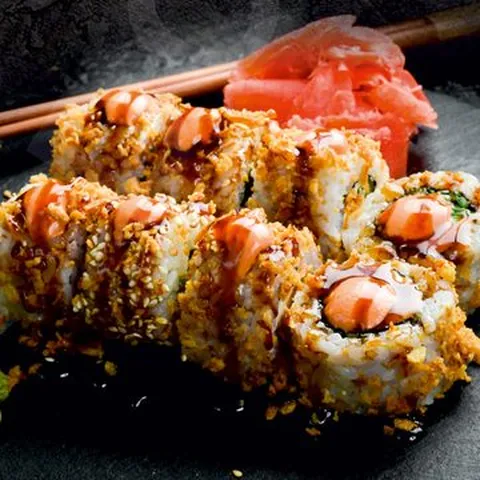
Sie sollen sich fühlen wie bei Freunden – ob für eine schnelle Mittagspause oder einen langen Abend.
Nigiri, Sashimi, Maki, Ura-Maki, Crunchy und Signature Rolls – mit Lachs, Thunfisch, Aal und Garnelen, oder mit Avocado und Mango.

Signature Roll
14,90 €
Sashimi · 8 Stk.
15,90 €
Crunchy Roll · 6 Stk.
10,50 €
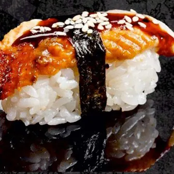
Nigiri · 2 Stk.
6,00 €
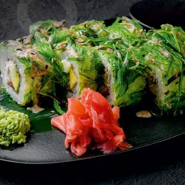
Signature Roll
14,90 €
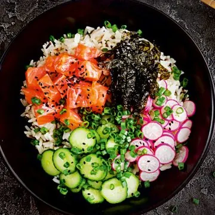
Fresh Bowl
13,90 €
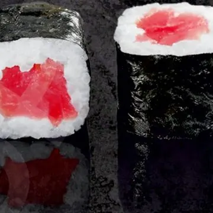
Hoso-Maki · 8 Stk.
5,90 €
Vorspeise
8,00 €
Sashimi · 8 Stk.
14,90 €
Crunchy Roll · 6 Stk.
15,90 €
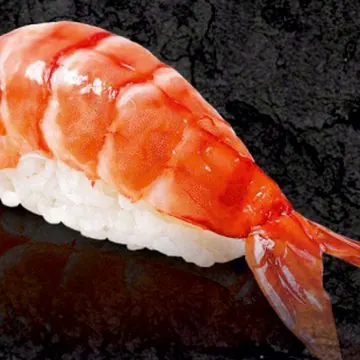
Nigiri · 2 Stk.
5,00 €
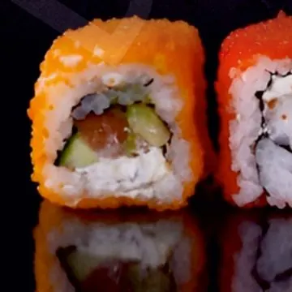
Ura-Maki · 8 Stk.
9,50 €
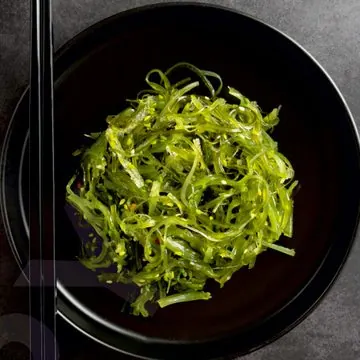
Vorspeise
5,50 €
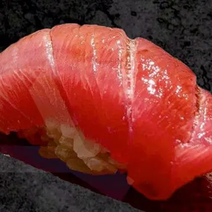
Nigiri · 2 Stk.
5,50 €
Hoso-Maki · 8 Stk.
5,00 €
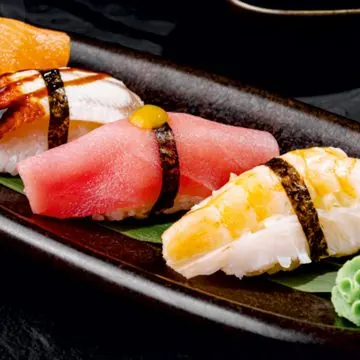
Nigiri · 2 Stk.
ab 4,70 €
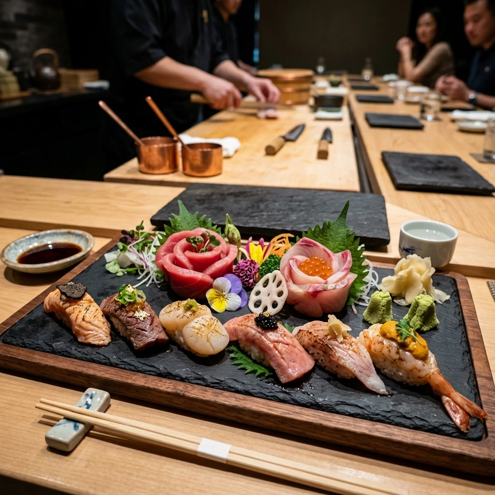
Sushi Menü 7
auf Anfrage
Sushi und asiatische Gerichte aus einer Küche.
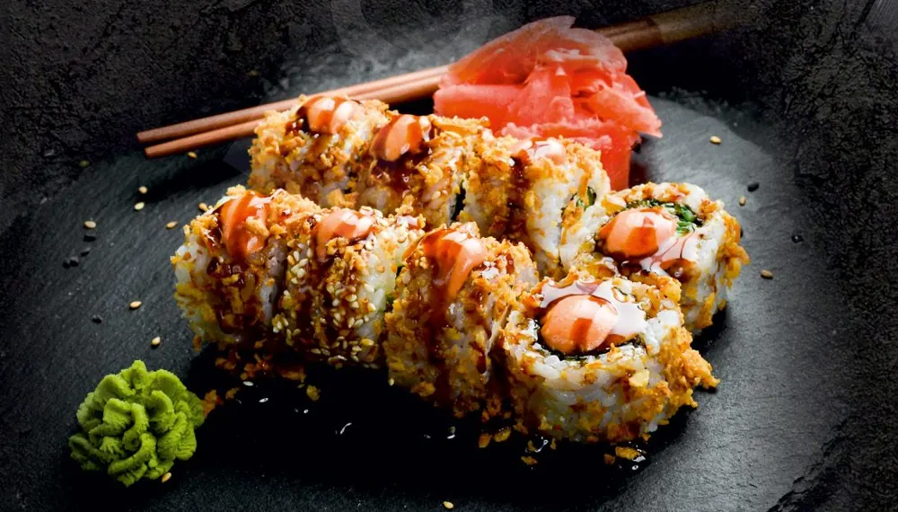
Sushi-BarVon klassischen Hoso-Maki über zarte Nigiri und Sashimi bis zu den Signature Rolls unseres Chefs.
Pho, Udon-Nudeln, Ente, Tofu und Curry mit Wok-Gemüse und Jasminreis.
Ob am Tisch oder zu Hause – alles aus derselben Karte, frisch für Sie zubereitet.
Nehmen Sie Platz – wir servieren frisch vom Brett an Ihren Tisch.
Telefonisch bestellen, abholen – sorgfältig verpackt und zum gleichen Preis.
Unsere gedruckte Speisekarte – zum Durchblättern.
An Feiertagen geöffnet – auch dienstags.
Steingasse 10 · 98574 Schmalkalden
Beim Laden der Karte werden Daten von Google Maps abgerufen (Datenschutz).
Abholung & Reservierung
Rufen Sie uns an – wir rollen frisch für Sie, ob zum Mitnehmen oder für Ihren Tisch.
03683 6098662 Jetzt anrufen